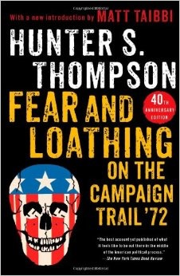

We the Students of the Election Class, in Order to form a more perfect Course, establish guidelines and recommendations to be used when the next American Elections class is offered four years from now. This document provides a list of ideas for Peter Warren (or like whoever wants to teach this class) to use as suggestions for designing the structure of the course. The following are our thoughts on how the course will be run and the style of learning that is involved.
1. We believe that the majority of the work for this course should be from self determined research and learning independent to the class in the form of Task Forces. Task Forces are student organized individual or group projects about anything they believe is interesting and pertains to elections in some way. This area of the course gives a great amount of freedom and responsibility to the students and should be made clear before signing up for the course.
2. Most of the class time should have a flexible schedule, spent having class discussions about the assigned reading, current events articles, and Task Force findings. It is important that class time be used productively, as determined by the teacher, but can be about anything a student or teacher wishes to cover.
3. A good amount of homework reading, on average, in the assigned books per class should be about 30 pages. There will be time during class to discuss the book and/or reading for that class if desired but the readings might not have a check-in every time it is assigned as a consequence.
4. Students and teachers should feel free bring in current events article to be read and discussed during class. Bringing in articles should not be seen as a requirement but sharing interesting news about the current election is always encouraged during class.
5. We believe that keeping a log book specifically for what is said during the class discussions would be very beneficial as that information may be very useful to return to at a later date.
6. One structural outline for this course over the semester can be broken down into 3 main sections: the press, the media, and the campaign. There should a few specialty classes before and after each section of the course when using this structure. These specialty classes can be more traditional style classes consisting of teacher run informative lectures about the background history involved with past presidential elections or questions to consider about the elections that are covered.
7. The press section of this course is the first and is expected to be longest section, going for about the first quarter of the class. During this time the book The Making of the President 1960 should be assigned as the reading, and there may be a specialty class about the history around the election of 1960 if desired. There should also be time set aside for watching the 1960 Wisconsin democratic primaries documentary, Primary. The guiding questions and recommended class discussion focus during this sections should be about the author or the press involved in writing the articles used in the discussion, this is not a requirement but merely serves as a possible aid when reviewing the book and articles.
8. The media section of the course should begin right after the press section ends and should go until election day in the current presidential election in early November. It should begin with a few speciality classes going briefly over the election of 1964 before finally introducing the class to the election of 1968. During this time the book The Selling of the President (1968) should be the assigned reading. We believe that there should also be the Living Room Candidate assignment working and presentations during this section. Campaign ads and commercials from the current election can also be reviewed and discussed during class. Towards the end of this section some time should be set aside to work on and prepare for an Upper School assembly presentation about the coming election day and what the elections class has gone over so far.

9. The campaign section of the course should begin a couple of class periods after election day, allowing for the class to talk about the results of the presidential election. The reading for this section should the book Fear and Loathing on the Campaign Trail ’72, and there may be a specialty class introduction to the election of 1972 as well. Class discussions about the current election can become more casual giving time for discussing the system of the election or how the political system works. There is also time for watching and discussing the movie The Candidate. We believe that the campaign section should last until winter break.
10. After winter break, the rest of the class time can be spent working on final projects and wrapping up loose ends or remaining questions about the material covered during the course. The final projects should be decided on by the class.
*Gerald Ford replaced Spiro Agnew in 1973, then Richard Nixon in 1974; Nelson Rockefeller became the vice-president. Thomas Eagleton was replaced by Sargent Shriver during the 1972 campaign.
The chart above shows the major candidates for American elections from 1960 to 2016. The winning candidates for president and vice-president fill the first two rows in the chart; arrows track candidates throughout multiple elections. Red designates Republicans, blue designates Democrats, and purple is for a third party.
Encouraging as it may be to believe that an ordinary American citizen can become president, this chart demonstrates that the presidency and vice-presidency are often filled by just a few people and families. The Bush family is a striking example: George H.W. Bush was vice-president in 1980 and 1984 before becoming president in 1988. He also ran unsuccessfully for president in 1992. His son George W. Bush was president in 2000 and 2004. That means that in six out of the seven elections from 1980 through 2004, a Bush was president, vice-president, or the Republican presidential nominee. In the 2016 election, many Americans were wary or disapproving of Hillary Clinton’s connections to former president Bill Clinton; one aspect of Donald Trump’s appeal to some voters was that he was a political outsider.
Reflectionson Major ELection Themes (years 1976-2008) and their Significance for Today
Reflections on Major Election Themes (years 1976-2008) and their Significance for Today
We started this class with a mix of emotions about the impending election: enthusiasm, anxiety, and hope being among the most common. However, when we all shuffled into class on November 9th, a new set of emotions emerged. Hope and enthusiasm turn to fear. Anxiety faded into utter curiosity. We spent time pondering as a class how such an election could have occurred, how a man wrought with controversies could become president of the United States of America. We furiously questioned what the next four years would entail, while trying to find scraps of normalcy in the situation. Although answers often escaped us, examining past elections offered us insight into the American political mind, and helped provide context for the last couple of years, and the upcoming four. Below is a list of three major themes of elections spanning 1976 to 2008, which are accompanied by shored summaries about the cross-election relationships/patterns and the significance of the themes in this past election. At the end I have included a short reflection on my primary thoughts about what is to come and how history can prepare us for the next four years.
The Economy - The state of the economy has long played a prominent role in deciding election results, and jobs and economic stability are typically ranked as one of the most important issues for American voters. Two examples of economy heavy elections include 1992 and 2008. In 1992, Bush versus, Clinton, the country faced an unstable economy. Nerves seemed to run high, and although Bush held high approval ratings just a year before, Bill Clinton won the election thirty-two states to eighteen states. Clinton chose to center his campaign on promises of a better economy, which appealed to the anxious voters. In 2008, Obama began his campaign amid a growing recession, following eight years of George W. Bush, and promised to bring change and jobs. He vowed to create new jobs and help struggling, unemployed citizens gain skills in order to be productive in the workforce. Voters latched on to Obama’s message of change, and Obama won by six states.
Peoples’ perceptions of the economy and job market probably ultimately dictated the direction of the 2016 election. Many adamant Trump supporters marked Trump’s business experience and commitment to reigniting the coal industry as their favorite positions of the candidates. Many poor white Americans felt left behind by Obama and did not personally see the economic growth that occurred in the country as a whole. Looking ahead, it will be interesting to see if voters flip-flop parties in 2020 if Trump ends up creating the economic instability that some economists predict will happen.
The Outsider versus the Insider - The pull between political insiders and outsiders reappears periodically throughout the last eleven elections. Some voters want the experience of a political insider, someone who understands how Washington Politics works and the gritty details of how to be president. Other voters, however, look to elect someone who will shake the political world up, someone who will put a fresh face on Washington. This pull can be demonstrated by looking at the 1976 election and the 2004 election. In 1976 Carter ran a successful campaign against general Ford. Although successful, Carter was a native of the Deep South, a peanut farmer, and Naval officer. Unlike past presidents, like Nixon, Carter maintained little experience in politics. He entered as a fresh-face, and one that could bring truth and realness to the presidential position after the chaos of Watergate and the Nixon era as a whole. The 2004 election stands opposite of 1976. Both Kerry and Bush were seasoned politicians and knew the Washington system inside and out. Bush particularly was an insider, due to the fact that his father had been president and he had grown up embedded in Washington politics. Voters respected Bush’s experience and knowledge, and he won thirty-one states, to nineteen states.
No sounder example exists for the insider vs outsider question than the 2016 election; Clinton and Trump represented the extremes of each end. Many people referred to Clinton as the most qualified candidate to ever run for president. Not only had Clinton served as a New York Senator and Secretary of State, but she had also served as first lady under Bill Clinton’s presidency. However, for some voters, this made her a scam, just a liar. She was someone of empty promises, and only cared about playing the game of politics. Many voters admired Trump’s frankness and freshness. Voters wanted something to change in Washington, and Trump was a vehicle from which to accomplish that. Maintaining no experience in politics, and Washington specifically, Trump will shake things up. The question remains, how.
Increasing Partisanship - One trend that seems to grow progressively worse is that of increasing partisanship. In an ideal democracy, each political party has representation and those representatives then work together to compromise and reach agreements about policies and laws. The United States federal government seems to float farther and farther away from this ideal. Not only will democrats and republicans rarely agree to agree, but ordinary voters feel obligated to stick with their party. Two countering examples that demonstrate this progression are the election of 1980 and the election of 2000. In 1980, Ronald Raegan, a fresh face to national politics, won forty-four out of the fifty states; Carter won six. This is significant because a number of registered democrats voted republican because of their affinity for Raegan. Voters willingly stepped out of party lines in order to vote for someone they felt reflected their wishes and goals for the country. In contrast, in 2000, the election between Bush and Gore split along party lines. Bush won the conservative, largely Christian (evangelical) vote with positions like his anti-abortion stance, and pro second amendment stance. Meanwhile, Gore lured in democratic voters with his liberal, progressive stances, like that on climate change and the environment. Although perfectly reasonable with one other, the democrats and republicans had little enthusiasm for actually listening to the other side.
Currently, examining the end of the Obama years, Congress is in a state of hyper-partisanship; Obama had great difficulty passing laws as the republican dominated congress refused to work with him and achieve compromise. It seems like senators and representatives are far more interested in defending their party than actually participating in meaningful work. This is all coming to fruition now, with things like Obamacare (The Affordable Care Act). As we move into an era with a completely Republican Majority government, citizens are expecting many of Obama era policies to be revoked or changed. Obamacare is the prime example. For years Republicans have complained about Obamacare and are now already making moves to revoke it; however, they have no replacement plans at the ready. Conservatives care more about ditching remnants of our liberal president, than protecting the people Obamacare aids. In addition, hyper-partisanship on behalf of voters altered the election results. While many republicans had qualms about Trump, many said they could never vote for Hillary Clinton, or never vote for a democrat. As we enter the Trump years, it will be interesting to observe whether mainline democrats and republicans, both politicians and ordinary citizens, will unite to protect our country, or whether Trump will only cause further, more harmful partisanship.
Studying history allows me to reconcile both with the past and the future. Although I think about the next four years with grave concern, I look back at how ordinary citizens stood up against injustice, and can’t stop but feel pangs of hope. It seems that every time there is a dramatic shift in Washington, Bush to Obama or the rise of Raegan for example, some block of citizens expects the absolutely worst. Some group of people fear the country will topple, that the end is imminent; however, here we are. Now, that does not mitigate the fact that we are in uncharted territory, but it does require that we step outside our own heads, if even for a brief moment. Our country bounced from Nixon to Carter, to Raegan, Bush, and Clinton. Mistakes were made, troublesome policies were implemented, progress was made then removed in regards to civil rights, but here we are. If I have learned anything from examining forty years- worth of elections, it is that democracy is a messy, sometime ugly system, that does not always function how we envision it should. In the upcoming four years, I hope we embrace that and put our faith in the democratic system by being active participant in it, just as Vietnam and Iraqi war protesters, farmers, coal miners, environmentalists, feminists, people of color, and people eager for a say have done for so many years.